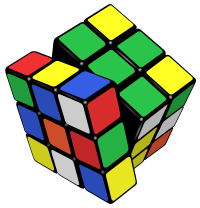

O rubikovoj kocki
Rubikova kocka je trodimenzionalna mehanička igračka, koju je 1974. godine izumio mađarski kipar i profesor arhitekture Ernő Rubik. Rubik je igračku prvobitno nazvao "Čarobna kocka" i licencirao je 1980. godine, a ona je doživjela nezapamćen uspjeh, prvo u Njemačkoj, gdje je 1980. proglašena igračkom godine, a zatim i širom svijeta. Do 2005. je prodano preko 300 milijuna primjeraka ove igračke. Postoji nekoliko inačica Rubikove kocke. U klasičnoj inačici, svaka od šest strana kocke ima 9 kvadratića (u bijeloj, crvenoj, narančastoj, plavoj, žutoj i zelenoj boji), koje treba složiti tako da svaka strana bude jednobojna. Matematičari su izračunali da postoji oko 43 trilijuna kombinacija kocke. Unatoč tome, kocku je moguće složiti u ispod 30 poteza.
